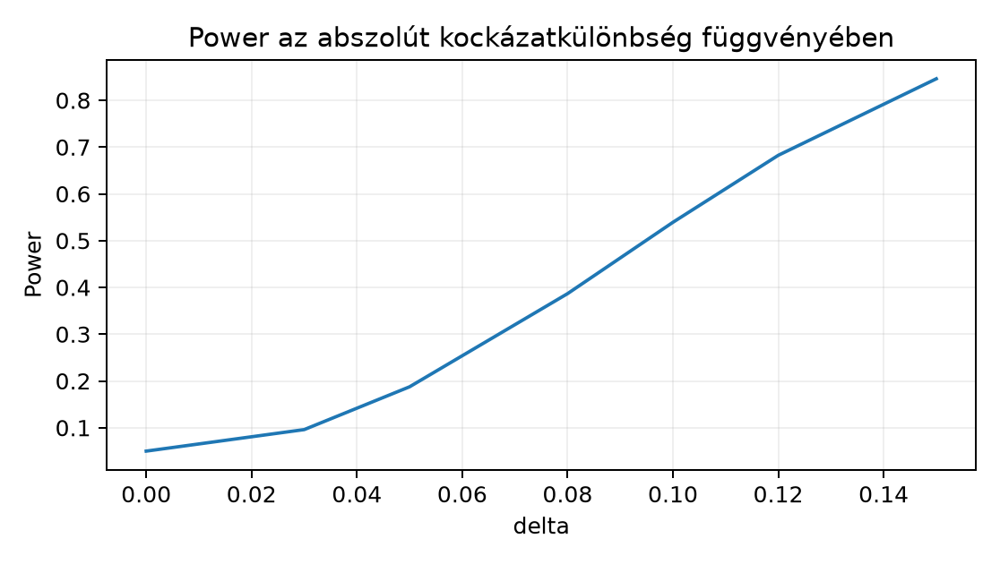

Belépő · szint: közép · idő: 60 perc · eszköz: SciPy, statsmodels
Előfeltétel: 16.2. alfejezet · Célkészség: Power, mintanagyság és többszörös próbák · Kimenet: működő kód és a labor ellenőrző tesztje.
A Northstar kísérleti folyamatában minden ügyfél egyszeri
randomizálási egység, a primer kimenet a bináris
conversion_7d. A 16.2. alfejezet
gondolatmenetét folytatva (ott a kontrollkonverzió 0,20 körüli volt)
most a kontrollkonverziót 0,18-nak, a kezelés hatását abszolút
kockázatkülönbségként
értéknek tekintjük. Most azt a tervezési kérdést vizsgáljuk: ha egy új
kísérletet indítanánk
ügyfél/csoport mintanagysággal, kétoldali
szintű arányteszttel, mekkora eséllyel találnánk meg az előre rögzített
és
hatást? Tegyük fel, hogy a döntési szabály az, hogy
esetén elutasítjuk a nullát. Azt is mérni akarjuk, hogyan növeli a hamis
pozitív döntések arányát, ha ugyanazt a kísérletet többször, közbenső
mintaállapotokban is kiértékeljük.
Bemenet:
,
,
,
,
szimulációs ismétlés, seed 20261020.
Kimenet: elutasítások aránya = becsült power; a Monte
Carlo standard hibája.
Ellenőrzés:
mellett a becsült power
körül legyen, és a kézi normál közelítésből kapott érték a szimuláció
sugarú intervallumán belül legyen.
Előzetes becslés a képletek nélkül: power(δ=0.10)
körülbelül 0,5–0,6 lehet
csoportonként; power(δ=0.05) lényegesen kisebb, talán 0,2
alatt.
A másodfajú hiba angolul type II error: . Kiegészítője a power:
amely egy -beli valószínűség, nem a tényleges adatból számolt bizonyosság. A power az adatgyűjtés előtti tervezési mennyiség: attól függ, mekkora -t, -t, hatást és varianciát rögzítünk, és melyik tesztet használjuk.
Két arány összehasonlításakor a tesztstatisztika a közös nullabeli aránnyal:
Itt , csoportarányok, dimenzió nélküli kockázatkülönbség, a konverziók darabszáma. Ha a valódi hatás és , a power pozitív -ra jó közelítéssel
ahol a standard normál eloszlásfüggvény. Például , , esetén , a standard hiba , a nemcentralitási paraméter , így a power .
Minimum detectable effect (MDE) az a legkisebb valódi hatás, amelyet az adott elrendezés legalább cél-powerrel, tipikusan 80%-kal talál meg. Képlete általános normál becslőre
de két aránynál a is függ -tól a -n keresztül, ezért iterálni vagy szimulálni kell. A fenti példában az MDE körülbelül 0,14; ez nem azonos a 0,10-es célhatással.
A power nem utólagos mutató, hanem a kísérlet előtti tervezési döntés. A következő munkalapot az adatok megtekintése előtt kell kitölteni és rögzíteni; a későbbi p-érték és CI ettől független, utólagos eredmény.
| Paraméter | Példaérték | Miért kell rögzíteni? |
|---|---|---|
| Primer végpont | conversion_7d (bináris) |
a teszt és a hatásméret típusa ebből következik |
| Kontrollarány | 0,18 | a variancia és az MDE erősen függ tőle |
| Minimális üzleti hatás | 0,10 | nem a megfigyelt hatás, hanem a döntéshez szükséges legkisebb hatás |
| Kétoldali | 0,05 | a kritikus érték |
| Célpower | 0,80 | a tag és a minta mérete |
| Allokáció | 1 (vagy 2) | eltérő kararány eltérő -t ad |
| Várható lemorzsolódás | 10% | a besorozott -t szorzóval kell növelni |
| Elemzési egység | customer_id |
klaszterezés esetén a design-hatás is szorzó |
| Többszörös végpont | 1 primer, a többi feltáró | Bonferroni/BH nélkül a FWER nő |
| Interim pillantások | nincs, vagy előre rögzített szám | utólagos peeking megnöveli a hamis pozitív arányt |
A két arányra vonatkozó mintanagyság-képlet eltérő allokációval:
majd a lemorzsolódással , és ugyanígy -re. A lépések:
A lab/experiments/power/power_worksheet.py ezt a
számítást futtatja. A
,
,
kétoldali
,
80% power mellett a nyers minta csoportonként 275; 10% lemorzsolódással
305/305 (összesen 610). A 2:1 treatment:control allokáció 217 kontrollt
és 434 treatmentöt ad (651 fő); három primer végpont
Bonferroni-szintjével
()
407/407 (814 fő); 90% powerrel 408/408 (816 fő). A 150/150-es minta
powerje a 0,10-es hatásra 0,5448, az MDE 0,1381; a tervezett 305/305
mellett az MDE 0,0945. Ezek a számok a tervezés kontrolljai, nem a
megfigyelt adat utólagos értelmezése.
Peeking (belepillantás): ha ugyanazt a kísérletet közbenső, kumulált mintaállapotoknál is kiértékeljük, és bármelyik pillantásnál esetén megállunk, a „legalább egyszer szignifikáns” döntés hibavalószínűsége nagyobb, mint . A korrelált közbenső tesztek miatt a névleges 0,05-os határok összességében fellazulnak; a helyes megoldás előre regisztrált interim-határ, például Bonferroni- vagy alfa-költő eljárás, nem utólagos „megállok, mert szép a p”.
Többszörös próbák (multiplicity): ha független nullhipotézist 0,05 szinten tesztelünk, akkor legalább egy hamis elutasítás valószínűsége ; például esetén ez 0,401. A family-wise error rate:
ahol a tévesen elutasított nullhipotézisek száma. A Bonferroni-korrekció minden egyes tesztet szinten végez; ebből a uniókorláttal adódik. A false discovery rate ezzel szemben a felfedezések közötti hamis arány várható értéke:
ahol
az összes elutasítás száma. A Benjamini–Hochberg (BH) eljárás a növekvő
p-értékekre az
küszöbsort alkalmazza: megkeressük a legnagyobb
indexet, amelyre
,
majd az első
hipotézist elutasítjuk. A küszöbök
esetén nagyobbak a Bonferroni-féle
küszöbnél. Független (illetve bizonyos pozitív függésű) tesztek mellett
a BH az FDR-t kontrollálja; tetszőleges függésre ez általánosan nem
garantált. Például a tíz rendezett p-érték
0,001; 0,004; 0,009; 0,018; 0,041; 0,060; 0,150; 0,300; 0,520; 0,810,
a küszöbök
0,005; 0,010; 0,015; 0,020; 0,025; 0,030; 0,035; 0,040; 0,045; 0,050.
A legnagyobb
,
amelyre
,
a
(,
az ötödiktől kezdve minden p a küszöb fölött van), így az első négy
hipotézis elutasításra kerül.
A FWER szigorúbb: minden hamis pozitív eseményét bünteti; az FDR a hamis pozitívak arányát kontrollálja, ami sok szűrőtesztnél gyakorlatiasabb.
A multiplicitási stratégia akkor érvényes, ha az elemzés előtt rögzítjük a hipotéziscsaládot, a primer/szekunder szerepet és a korrekciót. Példa négy hipotézisre:
| ID | Szerep | Kérdés | Korrekció |
|---|---|---|---|
| H1 | primer | a treatment növeli a konverziót | α = 0.05, önálló |
| H2 | szekunder | a treatment növeli a kosárértéket | Holm a H2–H4 családon |
| H3 | szekunder | a treatment csökkenti a késést | Holm a H2–H4 családon |
| H4 | szekunder | a treatment növeli az ismételt vásárlást | Holm a H2–H4 családon |
A szabály: H1-et külön, α=0.05 mellett értékeljük; csak ha H1 szignifikáns, lépünk tovább a H2–H4 családra Holm-korrekcióval. Ha H1 nem szignifikáns, a H2–H4 eredmények exploratory jelölést kapnak, nem megerősítő állítást. A Bonferroni, a Holm és a BH más célt szolgál:
| Módszer | Cél | Küszöb |
|---|---|---|
| Bonferroni | FWER szigorú kontrolja | minden próbára |
| Holm | FWER kontrol, kevésbé konzervatív | rendezett |
| Benjamini–Hochberg | FDR kontrol |
A következő táblázat a három módszer működését egyetlen, négytagú családon () szemlélteti. (A fenti gatekeeping szabály szerint H1-et külön, a H2–H4-et pedig tagú Holm-családként kezelnénk, 0,0167; 0,025; 0,05 küszöbökkel; ez itt ugyanazt az eredményt adja: H1 és H2 elutasítva.) Négy p-értékre :
| Módszer | Elutasított |
|---|---|
| Bonferroni () | H1, H2 (küszöb 0.0125) |
| Holm () | H1, H2 (H3 0.03 > 0.025-nél megáll) |
| BH () | H1, H2, H3 (H4 0.06 > 0.05) |
A BH több hipotézist fogad el, mert nem a családon belüli hibát, hanem a hamis felfedezések arányát kontrollálja; ezért csak akkor használható, ha a cél ezt indokolja. A döntési szabályt nem a p-értékek láttán választjuk ki.
def bonferroni(pvalues, alpha=0.05):
threshold = alpha / len(pvalues)
return [i for i, p in enumerate(pvalues) if p <= threshold]
def holm(pvalues, alpha=0.05):
order = sorted(range(len(pvalues)), key=lambda i: pvalues[i])
rejected = []
for rank, index in enumerate(order, 1):
if pvalues[index] <= alpha / (len(pvalues) - rank + 1):
rejected.append(index)
else:
break
return rejected
def bh(pvalues, q=0.05):
# step-up: a legnagyobb k, amelyre p_(k) <= k*q/m; az első k-t elutasítjuk
m = len(pvalues)
order = sorted(range(m), key=lambda i: pvalues[i])
k_max = 0
for rank, i in enumerate(order, 1):
if pvalues[i] <= rank * q / m:
k_max = rank
return order[:k_max]
p = [0.001, 0.008, 0.03, 0.06]
print(bonferroni(p), holm(p), bh(p)) # [0, 1] [0, 1] [0, 1, 2]
assert bh([0.02, 0.04, 0.045]) == [0, 1, 2] # step-up: mindhárom elutasítvaA lab/multiplicity.py bonferroni(),
holm(), benjamini_hochberg() és
report() függvényei ezt a három döntést adják; a
tests/test_multiplicity.py a Bonferroni 0.0125 küszöbét, a
Holm két elutasítását, a BH három elutasítását és a négy hipotézis
szerepét ellenőrzi.
A lenti kód csak a könyv alapcsomagjait használja; a projekt virtuális környezetéből futtatható. A seed rögzítése a pszeudorandom sorozatot reprodukálhatóvá teszi, de önmagában nem garantál bitazonos lebegőpontos eredményt minden platformon. A statisztikai reprodukálhatóságot a becsült power és a Monte Carlo intervallum együttes közlése adja.
import numpy as np
from scipy.stats import norm
def two_prop_z(x0, n0, x1, n1):
p0 = x0 / n0
p1 = x1 / n1
p_pool = (x0 + x1) / (n0 + n1)
se = np.sqrt(p_pool * (1.0 - p_pool) * (1.0/n0 + 1.0/n1))
return (p1 - p0) / se
def simulate_power(p0, delta, n_per_group, B=4000, alpha=0.05, seed=20261020):
rng = np.random.default_rng(seed)
p1 = p0 + delta
zcrit = norm.ppf(1.0 - alpha / 2.0)
reject = np.empty(B, dtype=bool)
for b in range(B):
x0 = rng.binomial(n_per_group, p0)
x1 = rng.binomial(n_per_group, p1)
z = two_prop_z(x0, n_per_group, x1, n_per_group)
reject[b] = np.abs(z) > zcrit
power = reject.mean()
se = np.sqrt(power * (1.0 - power) / B)
return power, se
print("delta power 95% MC CI")
for delta in [0.0, 0.03, 0.05, 0.08, 0.10, 0.12, 0.15]:
est, se = simulate_power(0.18, delta, 150, B=4000, seed=20261020)
print(f"{delta:.2f} {est:.3f} +/- {1.96*se:.3f}")Lehetséges szemléltető kimenet — ez nem a könyvírás során futtatott mérés, hanem a képletekből és a szimuláció várható ingadozásából összeállított illusztráció:
delta power 95% MC CI
0.00 0.051 +/- 0.007
0.03 0.099 +/- 0.009
0.05 0.186 +/- 0.012
0.08 0.391 +/- 0.015
0.10 0.541 +/- 0.015
0.12 0.678 +/- 0.015
0.15 0.843 +/- 0.011Az elméleti power-görbe a megadott normál közelítésből:

A többszöri belepillantás modellje ugyanabból a kumulált véletlen mintából olvassa a közbenső állapotokat:
def simulate_peeking(p, n_per_group, look_sizes, B=4000, alpha=0.05, seed=20261020):
rng = np.random.default_rng(seed)
zcrit = norm.ppf(1.0 - alpha / 2.0)
ever_reject = np.zeros(B, dtype=bool)
for b in range(B):
x0 = rng.binomial(1, p, size=n_per_group)
x1 = rng.binomial(1, p, size=n_per_group)
for k in look_sizes:
z = two_prop_z(x0[:k].sum(), k, x1[:k].sum(), k)
if np.abs(z) > zcrit:
ever_reject[b] = True
break
fwer = ever_reject.mean()
se = np.sqrt(fwer * (1.0 - fwer) / B)
return fwer, se
est, se = simulate_peeking(0.18, 150, [50, 100, 150], B=4000, seed=20261020)
print(f"bármelyik pillantásnál szignifikáns: {est:.3f} +/- {1.96*se:.3f}")A null-hatás mellett a három, egyenként 0,05-os határral végzett kumulált pillantás együttes hibája nagyobb, mint 0,05; a fenti konfigurációval a szemléltető becslés nagyságrendileg 0,10–0,12, azaz a hamis pozitív arány körülbelül a duplája a rögzített mintás teszttel várt 0,05-nak. A pontos érték seedfüggő, ezért a saját futtatáskor mindig a Monte Carlo hibahatárral együtt kell jelenteni.
Az alábbi ábra ugyanezt a szimulációt futtatja tovább: a pillantások számát 1-től 15-ig növeli, és a fix 1,96-os küszöböt a Bonferroni-féle pillantásonkénti küszöbbel veti össze.
A power-szimulációban a beállításnál mindkét kar azonos paraméterű, tehát a nullhipotézis igaz; a kétoldali teszt elméleti elutasítási aránya . A szimulált intervallum ezt lefedi, ami a helyes kritikus határ és a seed helyes használatának kézi ellenőrzése. A esetén a kézi normál közelítés -et ad; a Monte Carlo-sáv lefedi ezt az értéket. A power görbéje itt nem szimmetrikus, mert a binomiális variancia a sikeraránytól függ: nagyobb nullkockázat mellett ugyanaz az abszolút hatás kisebb standardizált eltérést jelent.
A peeking-eredmény értelmezése feltételes döntésként pontos: a nullmodell szerint generált adatokon a „bármelyik pillantásnál ” szabály hamis pozitív aránya nem , hanem annál nagyobb, mert a megállási szándék maga is a p-értékekből származik. A 16.2. alfejezetben tárgyalt p-érték itt is a döntési folyamat része, nem a hipotézis igazságának valószínűsége. A 12.3. alfejezet Monte Carlo-hibaképlete emlékeztet arra, hogy egyetlen seed eredménye csak egy realizáció; a fenti intervallumok ezt számszerűsítik.
Tervezési megkötés: a mintanagyság-becslés függ a kontrollaránytól, a célzott minimálisan fontos hatástól, a kétoldali/egyoldali teszttől és a tervezett elemzési egységtől. Többszöri közbenső ellenőrzés esetén az egyszeri 5%-os küszöb mechanikus alkalmazása nem tartja automatikusan az összesített téves riasztási valószínűséget 5%-on.
Értelmezés. Magyarázd el a 16.2. alfejezet arányteszt fogalmaival: miért várjuk, hogy a power-szimuláció esetén 0,05-öt adjon? Miért hibás az az állítás, hogy „a 0,54-es power azt jelenti, hogy a megfigyelt hatás 54% valószínűséggel legalább 0,10”?
Implementálás. A simulate_power
függvény felhasználásával, bináris kereséssel keresse meg az MDE-t
,
,
target power
,
,
seed 20261020 mellett. A keresési intervallum legyen
,
legfeljebb 12 iteráció. Ellenőrizd, hogy a talált
mellett a szimulált power 0,80-hoz közeli. Mekkora toleranciát indokol a
Monte Carlo standard hiba?
Hibadiagnózis. Egy elemző a peeking modellt úgy
írta meg, hogy minden pillantásnál mindkét karra új, független 50 elemű
mintát generál: x0_look = rng.binomial(50, 0.18) és
x1_look = rng.binomial(50, 0.18), majd ezekből számol z-t.
Azt állítja, hogy ez modellezi a háromszori belepillantást. Mi a hiba?
Milyen hamis pozitív arányt közelít ez a változat, és miért tér el a
kumulált adatokat használó eljárástól?
Megváltozott feltétel. Módosítsd a
peeking-szimulációt Bonferroni-interimhatárra: a három pillantás
mindegyike csak
szinten kétoldali tesztet használ, azaz a kritikus érték
norm.ppf(1 - alpha_look/2). Futtasd ugyanazzal a seeddel.
Körülbelül mekkora ever_reject értéket vár, és miért
elégíti ki ez a Bonferroni-korlátot? Add meg az MC intervallumot
is.
1. A esetben a generáló paraméterek azonosak, tehát igaz, és a rögzített eljárás definíció szerint . Ez az elutasítás gyakorisága a hipotetikus ismételt mintavételezések során, nem egyetlen minta utáni igazságvalószínűség. A 0,54-es power hasonlóan feltételes gyakoriság: és igaz volta mellett az eljárás az esetek 54%-ában utasít el. A megfigyelt kísérlet befejezése után a hatás bizonytalanságát a konfidenciaintervallum mutatja; a power nem poszterior valószínűség, ahogyan ezt a 16.2. alfejezet intervallumértelmezése is elkülöníti.
2. Lehetséges megoldás:
def power_at(delta):
return simulate_power(0.18, delta, 150, B=4000, seed=20261020)[0]
lo, hi = 0.05, 0.30
for _ in range(12):
mid = 0.5 * (lo + hi)
if power_at(mid) < 0.80:
lo = mid
else:
hi = mid
mde = 0.5 * (lo + hi)
est, se = simulate_power(0.18, mde, 150, B=4000, seed=20261020)
print(f"MDE várhatóan ~ {mde:.3f}, power {est:.3f} +/- {1.96*se:.3f}")A keresés 0,14 körüli értéket ad, mert a 0,14-es hatásnál a normál közelítés powerje éppen kb. 0,80 (a normál közelítés szerinti MDE 0,138–0,140). Két különböző egységű hibát kell elválasztani. A szimulált power Monte Carlo standard hibája -nél (power-egységben). Mivel a power a körüli tartományban kb. 5–6-os meredekséggel nő -val, ez -ban csak kb. – bizonytalanságnak felel meg. A rögzített seedű szimulált power-függvény nem feltétlenül monoton, ezért a bisection csak közelítő: a tartományba eső eredmény elfogadható. Ha szűkebb garantált tolerancia kell, növeljük -t, vagy használjunk determinisztikus normál közelítést.
3. A hiba az, hogy az új, független minta nem
ugyanazt a kísérletet figyeli; a valódi interim-elemzés a korábbi
adatokra épülő kumulált mintát használja. A független változat pontosan
a három, diszjunkt mintán végzett teszt unióját modellezi; nullhipotézis
alatt az elméleti hamis pozitív arány
,
ami nagyobb, mint a kumulált, korrelált tesztek jellemző 0,10 körüli
értéke. A kumulált z-statisztikák pozitívan korreláltak (a korábbi
minták a későbbi teszt részei), ezért a kumulált peeking tényleges hamis
pozitív aránya kisebb (kb. 0,11), mint a független modell 0,143-a: a
független minta-változat tehát túlbecsüli a tényleges
peeking-hibát. (Egy 20 000 ismétléses ellenőrző szimuláció a kumulált
változatra kb. 0,108-at adott.) A helyes megoldás a feladatban szereplő
x0[:k].sum() kumulált összegzés.
4. A módosított kritikus érték:
alpha_family = 0.05
look_sizes = [50, 100, 150]
K = len(look_sizes)
alpha_look = alpha_family / K
zcrit = norm.ppf(1.0 - alpha_look / 2.0)
# a simulate_peeking belsejében |z| > zcritA Bonferroni-uniókorlát szerint a három pillantás bármelyikén
elkövetett hiba valószínűsége legfeljebb
.
A kumulált adatokon ez a korlát nem teljesen éles, ezért a szimulált
ever_reject várhatóan 0,04 körüli, 0,05 alatt; a 4000-es
replikációból számolt MC intervallum nagyjából
.
Ugyanazzal a seeddel a kimenet például
fwer = 0.043 +/- 0.006 lehet. Ez a kimenet csak a
szimulációs terv teljesítményét méri, és feltételezi, hogy a pillantások
időpontjai előre rögzítettek; utólag választott pillantásra a korlát nem
érvényes.
Egy kutató a kísérlet után több elemzést futtat: konverzió, bevétel, mobil alcsoport, hétvégi alcsoport stb. Az egyik p-érték 0,032 lesz. A jelentés ezt az egyetlen számot előre tervezett elsődleges tesztként mutatja be, és a kísérletet sikeresnek minősíti. Ha mind a tíz teszt nullhipotézise igaz, a legalább egy szignifikáns eredmény valószínűsége . A szép riport nem teszi az utólag választott hatást előre tervezetté; a szelekciót multiplicity-korrekcióval vagy a családi hibaráta előzetes definiálásával kell kezelni. Hasonlóan, ha a kutató közbenső pillantásnál megáll, mert a p-érték éppen 0,04 lett, a tényleges hamis pozitív ráta a peeking miatt nagyobb, mint a látszólagos 0,05. A helyes megoldás az elemzési terv előre rögzítése, a 15.3. alfejezet mintavételi egység logikájának megőrzésével, valamint a 4.3. alfejezet scriptbe kiemelhető, reprodukálható függvényhatárok használata.
A power egy előre rögzített eljárás feltételes elutasítási gyakorisága, nem utólagos bizonyosság: -nál , pozitív hatásnál a normál közelítésből becsülhető, a Northstar-szerű , elrendezésnél 0,10-es hatásra körülbelül 0,54. Az MDE az a legkisebb hatás, amelyet 80%-os cél-powerrel kimutatunk, itt nagyjából 0,14. A kumulált adatokba való többszöri belepillantás növeli a hamis pozitív arányt; Bonferroni-interimhatárral visszahozható a családi hibakorlát alá. Több tesztnél a FWER minden hamis pozitív eseményét, az FDR a hamis arányt korlátozza. A következő ellenőrző pont ezeket a döntési hibákat foglalja egységes statisztikai állításrendszerré.